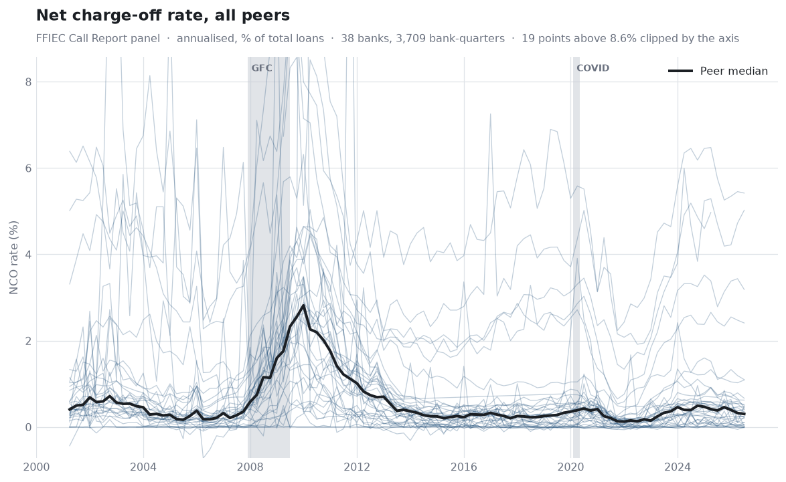
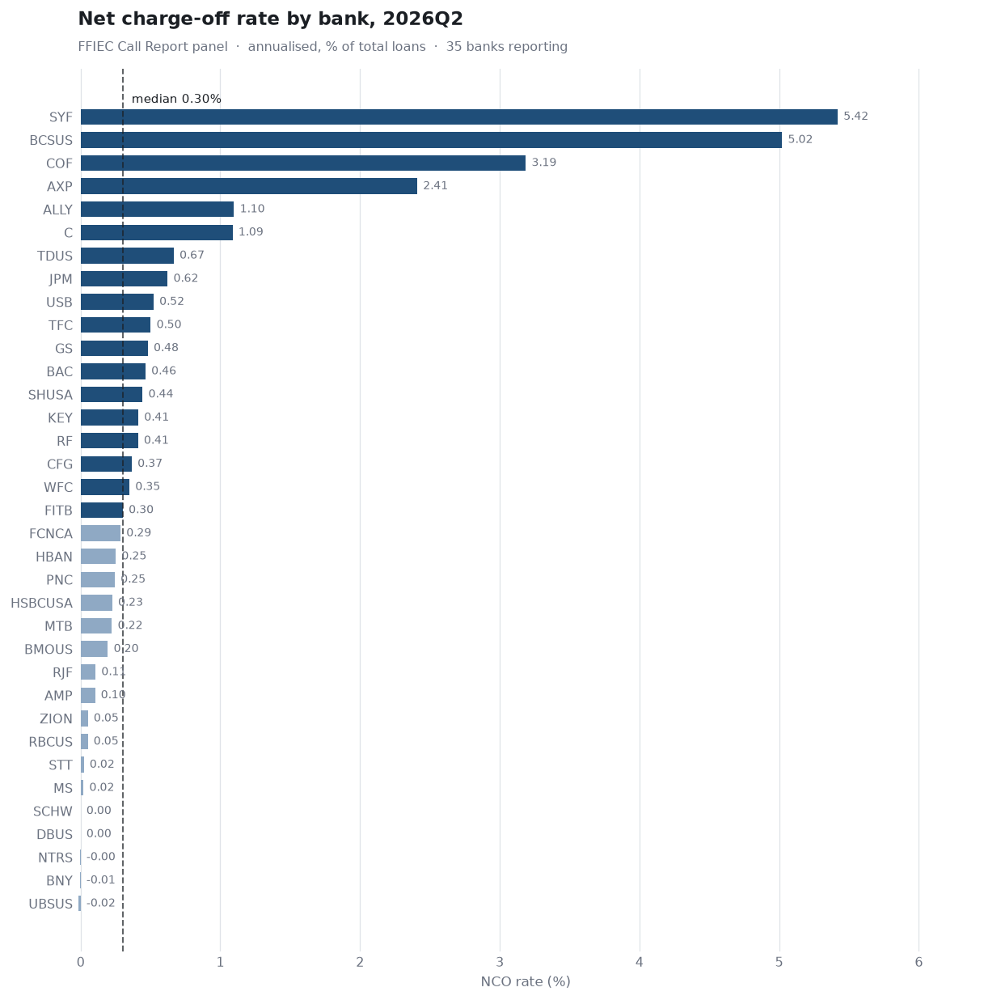
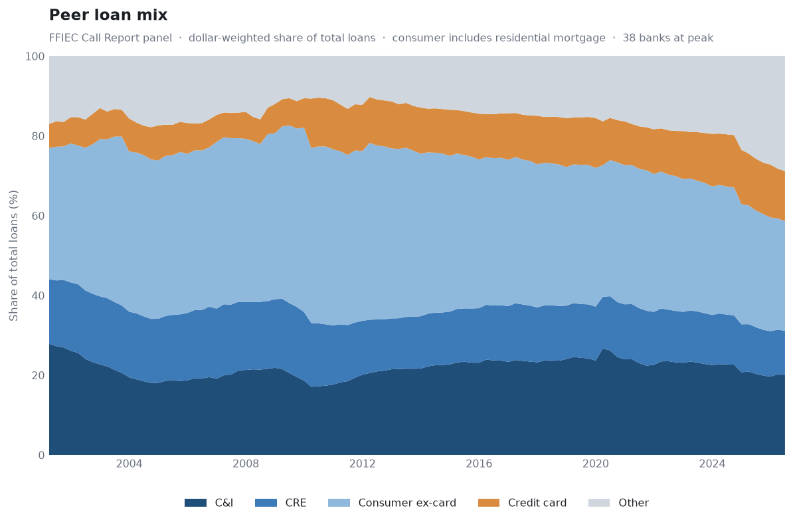
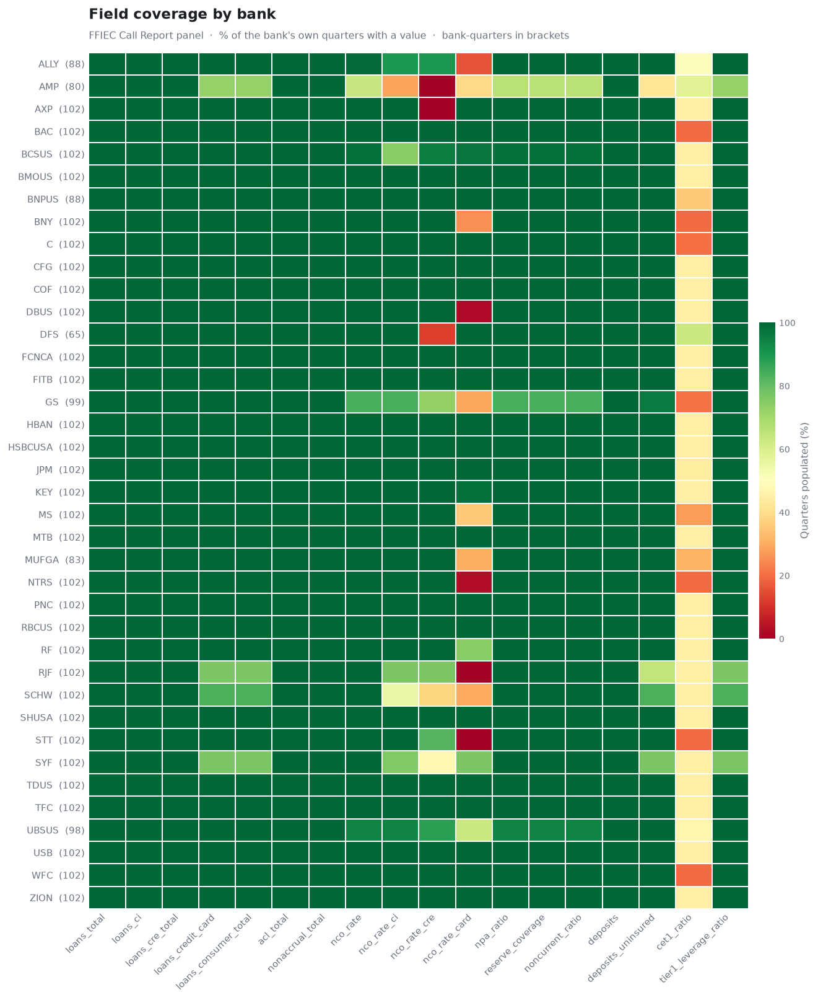

Quarterly panel data for US bank peer benchmarking, built twice from two independent sources. One row per bank-quarter, one column per variable.
Bank charters rolled up to the holding company, through each firm’s predecessors.
| Bank-quarters | — |
|---|---|
| Columns | — |
| Firms | — |
| Coverage | — |
The consolidated holding company as it reports itself — XBRL, filing HTML, investor supplements.
| Bank-quarters | — |
|---|---|
| Columns | — |
| Firms | — |
| Coverage | — |
You need history. It reaches back to 2001Q1 — two full credit cycles, including 2007–2009 — and each firm is carried through its predecessors, so the 2007 rows are Wells Fargo and Wachovia, PNC and National City.
You need categories that cross-foot. Schedule RC-C is a partition of a total the form itself states, so the loan mix is an arithmetic identity rather than an estimate. It also covers the US intermediate holding companies of foreign banks, which file no 10-K at all.
You need the consolidated firm. A Call Report is filed by a bank, so the FFIEC rollup excludes the broker-dealer, the card funding trusts and every non-bank lender. Ameriprise runs at 0.19× its 10-K loan book on that basis; the median firm is 1.00×.
You need disclosure that exists nowhere on a regulatory form — office CRE exposure, criticised/classified ladders, segment detail from investor supplements. It starts at 2020Q1.
They are not the same entity and are not expected to tie.
loans_ci runs about 0.80× the 10-K’s C&I line and
loans_cre_total about 1.11× its CRE line, because RC-C puts
loans to nondepository financials and municipal obligations on their own lines
and folds owner-occupied property into CRE. Use one source or the other for a
mix comparison — not a mixture of the two.




cet1_ratio begins in 2015 when Basel III restructured Schedule RC-R.
nco_rate is nco_total / loans_total, annualised
×4 and expressed in percent, where nco_total is gross
charge-offs less recoveries. Note the denominator is the period-end
balance, not average loans: the regulatory convention divides by average
loans, and loans_average is in the panel if you want to
recompute on that basis. The two differ by roughly 4% at the median.
Every rate is checked against its own inputs before it is drawn.